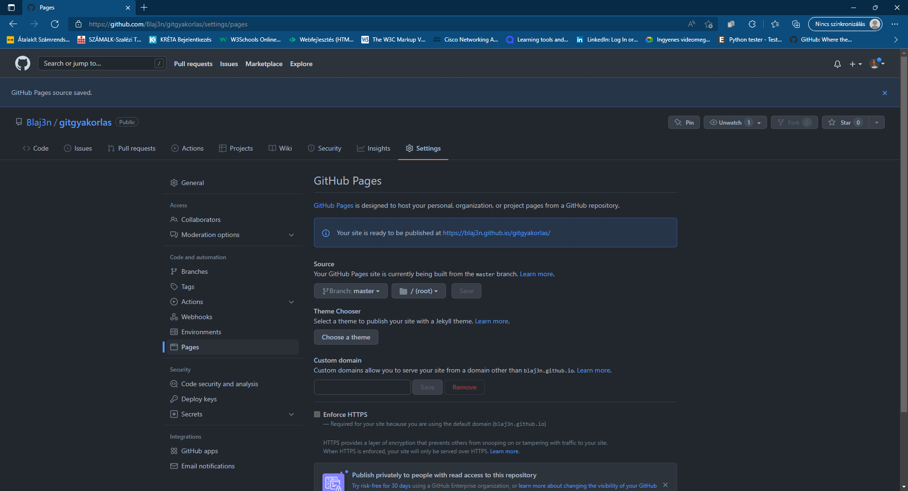

Szia. Mivel nekem rengetegszer meggyűlt a bajom, a Gittel, hogyan s miként lehet fájlokat feltölteni, illetve letölteni onnan ezért csináltam meg ezt a kis "weboldalt", ahol összeszedtem a számomra hasznos parancsokat. Remélem neked is segíteni tudtam/tudok.
$ git config --list
$ git config --global user.name "Your Name"
$ git config --global user.email "youremail@yourdomain.com"
$ git init
$ git remote add origin https://github.com/Blaj3n/gitgyakorlas.git
$ git add .
$ git commit -m "First commit"
$ git branch -M main"
$ git push -u origin main
Link Frissítése

Miután valamit frissítettünk azt úgy, tudjuk commitolni,hogy a Visual Studio Code-t használunk akkor a Changesnél a + ikonra kattintva stageljük az összes változtatást, majd azt commiteljük és felpusholjuk
S így a Githubnál, az utolsó commit neve látható majd a fájlok neve mellett
És Github pages link csatolása
Settings --> Pages --> a Source-nál a None-t át kell állítani masterre majd Saveljük
És ha mindent jól csináltunk, akkor a link bepipálódott, és rá kattintva megnyílik az oldal amit készítettünk